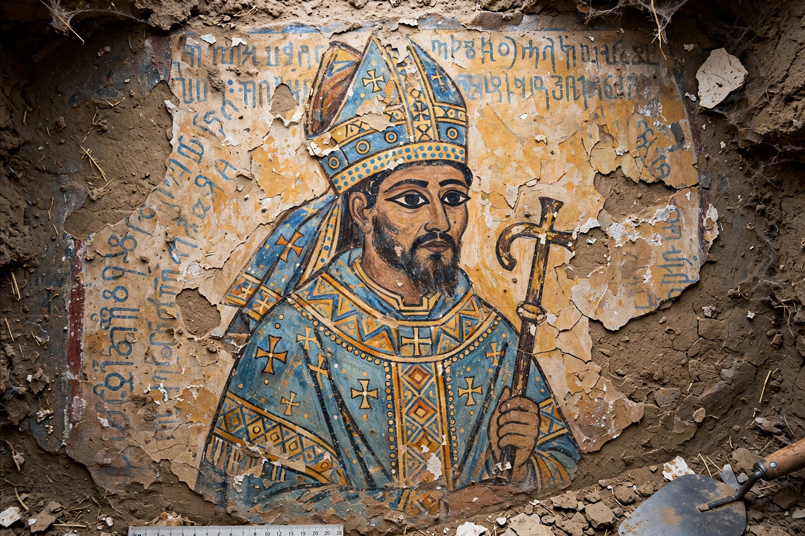

Nobatia
Nobatia (Latin: Nobatia; Old Nubian: Ⲛⲟⲃⲁⲇⲓⲁ, Nobadia) was a late antique kingdom in Lower Nubia. Together with the two other Nubian kingdoms, Makuria and Alodia, it succeeded the kingdom of Kush. The territory of Nobatia extended from the First Cataract of the Nile to roughly the Third Cataract, in what is now southern Egypt and northern Sudan; its capital was Pachoras (Faras).
| Capital | Pachoras (Faras) |
|---|---|
| Common languages | Old Nubian, Greek, Coptic |
| Religion | Coptic Christianity (from c. 543) |
| Established | c. 350 AD |
| Disestablished | c. 650 AD (merged into Makuria) |
| Preceded by | Kingdom of Kush |
| Succeeded by | Makuria |

History
Nobatia was founded by the Nobatae, a people settled in the region by the Roman emperor Diocletian around 297 AD to guard the frontier against the Blemmyes. Its first king known by name was Silko in the mid-5th century, who defeated the Blemmyes and left a triumphal inscription at Kalabsha. In about 543 the kingdom officially converted to Miaphysite (Coptic) Christianity through missionaries associated with the Byzantine empress Theodora, and a rich church-building programme followed; the frescoes of Faras Cathedral, excavated during the UNESCO Nubian salvage campaign in the 1960s before the site was flooded by Lake Nasser, are celebrated works of medieval African art. Sometime in the 7th century Nobatia was absorbed into the southern kingdom of Makuria, probably under King Merkourios.
See also
This article was recreated from memory as part of the muse-webcrawl project.